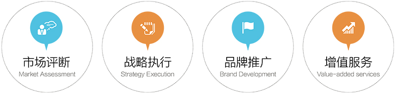

资立方跨境投资展业服务体系

为什么选择资立方展业服务
投资展业服务列表
投资展业——寻求融资
- 海外未上市高科技创新企业／投资管理机构／金融咨 9:41 AM 100%询机构寻求中国机构投资
- 用符合中国机构投资逻辑的方式全方位展现融资目标的潜力与前景
- 效果：筛选、对接有效投资人，提高融资效率
投资展业——市场推广
- 海外企业／机构进入中国市场的初期产品／企业形象推广
- 灵活利用新式传播渠道推广
- 让企业的核心卖点高效传达机构投资人及潜在客户／合作伙伴
投资展业——了解中国市场
- 在做出进入中国的决策前，必不可少的行业、政策、市场需求摸底
- 资立方专业投研团队长期紧贴中国市场一线动向
- 效果：对市场的了解能让决策更有效，落地更精确
投资展业——新媒体推广
- 利用新媒体的力量，让传统的金融行业焕发新的活力
- 传统媒体与自媒体结合，线上线下互动，利用资立方特有的线上社区
效应，展现立体的推广效果
- 效果：新媒介的引入可以让进入瓶颈期的业务挖掘新的机会
投资展业——KYC
- 帮助海外投资机构完成对境内客户的了解和审查
(Know Your Customer)
- 结合对中国市场的了解核实、审核潜在投资人情况
- 效果：完善的KYC 可以减少投资风险
投资展业——海外市场摸底／尽调
- 中国企业／机构在进行跨境资产配置时，需要对海外潜在市场
进行深入一线考察
- 资立方海外一线团队对潜在投资对象进行市场摸底，现场调查
- 通过资立方增值服务体系“立方行”让客户用最小的成本进行实
地考察和市场了解